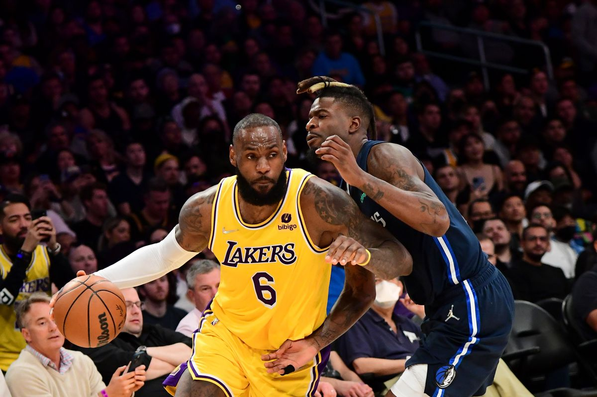

LeBron Raymone James Sr. (LeBron James) is an American professional basketball player. He was born on December 30, 1984 in Akron, Ohio, U.S. He plays for the Los Angeles Lakers team of the National Basketball Association (NBA). Nicknamed "King James", he is widely regarded as one of the greatest players in the history of the sport and is often compared to Michael Jordan.

Source: Google Images
James participated in high school sports for Akron, Ohio's St. Vincent-St. Mary High School. He won Ohio's Mr. Basketball three times and guided the school to three state titles. As a sophomore, he was also chosen to play for USA Today's All-USA First Team. He was largely recognized as the top high school player in the nation during his final year.In high school, LeBron averaged 21 points and 6 rebounds per game, and he eventually declared for the 2003 NBA Draft.

Source:Google Images
How Long Lebron James has been in NBA? Let's take a litlle detailed look:
The Cleveland Cavaliers selected LeBron James first overall in the 2003 draft. Even though he was only 18 years old, he received immediate acclaim as a prodigy. In fact, he scored 25 points in the first game of the regular season. After seven seasons with the Cavaliers, he eventually rose to the position of team's all-time leading scorer.
When James joined the Miami Heat in 2010, he surprised the basketball world by leaving the Cleveland Cavaliers. Several clubs reached out to him during this period, but he finally chose Miami for the chance to keep winning.During this time, analysts, followers, and even ex-players like Michael Jordan and Magic Johnson harshly condemned James.
James rejoined the Cavaliers in 2014 with the goal of winning a championship in his native city. In each of his four seasons back in Cleveland, he guided the group to the NBA Finals, earning the title in 2016. The Cavaliers made NBA history by becoming the first club to win a Finals series after falling behind 3-1. LeBron, who averages nearly a triple-double of 29.7 points, 11.3 rebounds, and 8.9 assists, contributed to opening up the door. He accomplished a triple-double in a game 7 to become just the third player in history.
LeBron joined the Lakers in 2018, and despite many setbacks, he still rules the Western Conference with averages of 25, 7, and 8. The Lakers had trouble finding lineup cohesion in 2018 because their team was comprised of a contentious group of veterans.
Source:Google Images
LeBron James is the only player in the NBA history to record at least 30,000 points, 10,000 reboounds, and 10,000 assists. Some of his major high school awards are he was a National Basketball champion in year 2003 and Thrice a state champion in years 2000,2001,2003.Some of his professional career awards in CLeveland Cavaliers are NBA Rookie of the year, NBA All-Rookie First Team (both in 2004), NBA Scoring Champion(2008). In Miami Heat he recieved NBA champion, NBA finals MVP, NBA MVP each award twice in corresponding years 2012 and 2013. During his term in Cleveland Cavaliers 2014-2018 he was a NBA Champion and NBA Finals MVP both in 2016. While in his time period in Los Angeles Lakers (2018- present) he became a NBA champion and NBA Finals MVP both in 2020. He is the youngest player to reach every round milestone in points(through 37,000). His biggest achievement is he became a NBA ALL-Star for 13 corresponding years from 2011-2023.
| TABLE | First Match | Second Match | Third Match |
|---|---|---|---|
| Year | 2013 | 2016 | 2018 |
| Place | Florida | California | Ohio |
| Opponent | San Antonio Spurs | Golden State Warriors | Boston Celtics |
| Game Number | Game 6 | Game 7 | Game 6 |
| Final Game Score | 103-100 | 93-89 | 109-99 |
"LeBron" redirects here. For his son LeBron James Jr., see Bronny James. For other people with the name, see Lebrón.
https://en.wikipedia.org/wiki/LeBron_James
LeBron James: A definitive look at King James' career stats, records, awards and medals
https://olympics.com/en/news/lebron-james-career-stats-records-awards-medals
LeBron James Biography: Life, Career & Records
https://lakersnation.com/lebron-james-biography/